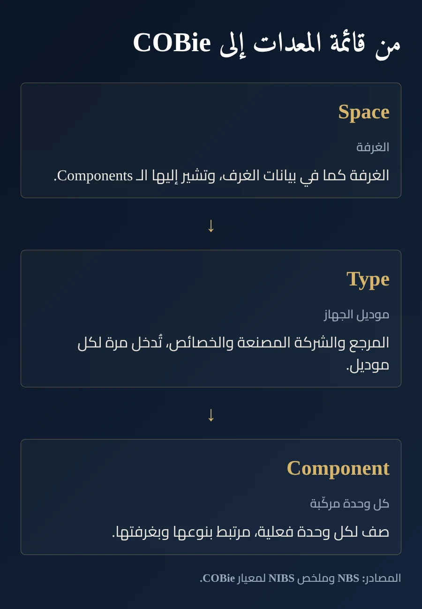

يُفتتح المستشفى، وتكون قائمة المعدات ملف جداول لا يثق به أحد. الموديلات والأرقام التسلسلية والضمانات موزعة بين رسائل البريد وملفات PDF ومجلدات الموقع. ثم يعيد فريق المرافق إدخال البيانات نفسها في نظام الصيانة بعد أشهر من وصول أول مريض.
وُجد COBie لسد هذه الفجوة. هو طريقة لتسليم بيانات الأصول القابلة للصيانة، وليس الأشكال الهندسية للنموذج، بشكل منظم يستطيع المالك تحميله في أنظمة التشغيل.
ما هو COBie وما ليس هو
تصفه NBS بأنه صيغة بيانات غير مملوكة لجهة بعينها، تنشر جزءًا من نموذج معلومات المبنى يركز على بيانات الأصول لا على الأشكال الهندسية، وتؤكد أن ملف COBie ليس BIM كاملًا بأي حال. أما ملخص NIBS للمعيار فيصفه بأنه صيغة بيانات ومعيار عملية، يلتقط الأصول القابلة للصيانة في المنشأة بصيغة رقمية لتقليل الفجوة الزمنية بين التسليم وبدء تشغيل المرافق.
نشرته أول مرة هيئة المهندسين بالجيش الأمريكي عام 2007، وتتولى NIBS صيانته منذ 2013. وتذكر المصدرين أنه يمكن تقديمه كجدول بيانات أو كبيانات IFC، ولهذا يقابله كثيرون أول مرة كملف Excel.

Type وComponent: الجزء المألوف للمخططين
جدولان هما الأهم للمعدات. جدول Type يصف نوع المنتج بمرجعه وشركته المصنعة وخصائصه. وجدول Component يسرد كل وحدة مركّبة على حدة ويربطها بنوعها وبالـ Space الموجودة فيه. وتوضح NBS ذلك بمثال باب هو نسخة من نوع باب معين وموجود في غرفة محددة.
وفي قائمة المعدات الطبية يأتي التطابق طبيعيًا:
- Space: الغرفة كما هي معرّفة في بيانات الغرف.
- Type: موديل الجهاز، مثل موديل مضخة تسريب واحد بشركته المصنعة وخصائصه.
- Component: كل وحدة فعلية موضوعة في غرفة، وتُتتبع منفردة.
إذا كانت قائمة معداتك تفصل أصلًا بين الموديل والكمية في كل غرفة، فأنت قطعت معظم الطريق.
ما يجب الاتفاق عليه قبل إنتاج البيانات
COBie جهد تعاوني. تشير NBS إلى أنه لا يملك مهني واحد أو جهة واحدة كل المعلومات، وتؤكد NIBS أن المعماريين والمهندسين والمقاولين والموردين ووكلاء التشغيل التجريبي والمالك جميعًا يساهمون. وبعض القرارات تمنع إعادة العمل:
- الحقول المطلوبة. يوضح ملخص NIBS أن كل حقل إما مطلوب دائمًا أو مطلوب إذا نص عليه العقد أو مرجعي، وأن للمالك تحديد الحقول التي يريدها. لذلك تختلف المخرجات من عقد إلى آخر.
- الإصدار والصيغة. المعيار تطور عبر السنوات، ووثيقة NIBS تصف الإصدار الثالث بأنه مسودة وقت كتابتها. تأكد مما تطلبه وثائق المشروع فعلًا.
- من يملك كل جدول ومتى. تُسلَّم البيانات على مراحل تنتهي بتسليم كامل عند التسليم، لذلك يجب بناء بيانات المعدات أثناء التصميم لا تجميعها في النهاية.
- أكواد ثابتة للغرف والمعدات. لا يرتبط Component بـ Space وType إلا إذا تطابقت المعرّفات بين النموذج والجداول وملف البيانات.
لماذا يهم المالك
تعرّف NIBS الأصول القابلة للصيانة بأنها العناصر التي سيديرها المالك في نظام التشغيل والصيانة، ومنها المعدات الميكانيكية والكهربائية. وتضيف NBS أن الهدف دعم التشغيل والإصلاح والاستبدال. وفي المستشفى يعني هذا أن قائمة المعدات تصبح نقطة البداية لسجل الأصول، لا وثيقة تُعاد كتابتها بعد الافتتاح.
الخلاصة
COBie ليس ورقًا إضافيًا في النهاية. هو قائمة المعدات نفسها، منظمة مبكرًا بما يكفي لتنجو من التسليم. اتفق على الحقول المطلوبة، وحافظ على ثبات المعرّفات من بيانات الغرف إلى النموذج، واعتبر Type وComponent عمود قائمتك الفقري.